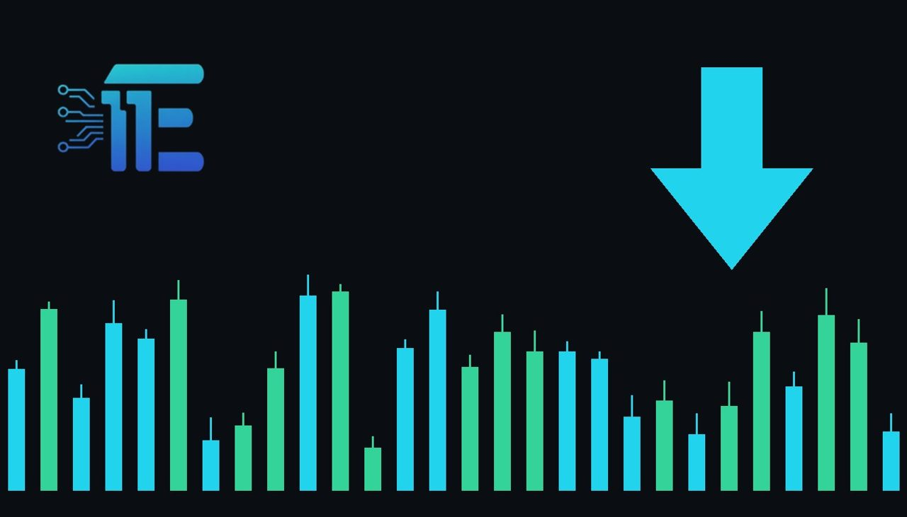

Gold Falls Below $4,000 Following Equity Market Slumpតម្លៃមាសធ្លាក់ចុះក្រោម 4,000 ដុល្លារ បន្ទាប់ពីទីផ្សារភាគហ៊ុនធ្លាក់ចុះ
XAU/USD impact: ▼ Bearishផលប៉ះពាល់លើ XAU/USD: ▼ ធ្លាក់

Gold dropped below $4,000 for the first time since July following a 2.6 percent slide in the Nasdaq. This sharp decline highlights shifting market dynamics as analysts weigh potential supports against central bank buying.
តម្លៃមាសបានធ្លាក់ចុះក្រោម 4,000 ដុល្លារជាលើកដំបូងចាប់តាំងពីខែកក្កដា បន្ទាប់ពីសន្ទស្សន៍ Nasdaq ធ្លាក់ចុះ 2.6 ភាគរយ។ ការធ្លាក់ចុះនេះបង្ហាញពីការផ្លាស់ប្តូរថាមវន្តទីផ្សារ ខណៈអ្នកវិភាគកំពុងពិចារណាកម្រិតគាំទ្រធៀបនឹងការទិញរបស់ធនាគារកណ្តាល។
The price of gold recently dropped below the $4,000 threshold for the first time since July. This downward movement coincided with a 2.6 percent slide in the Nasdaq index, reflecting broader shifts across financial markets.
តម្លៃមាសបានធ្លាក់ចុះក្រោមព្រំទណ្ឌ 4,000 ដុល្លារជាលើកដំបូងចាប់តាំងពីខែកក្កដា។ ការផ្លាស់ប្តូរចុះក្រោមនេះកើតឡើងស្របពេលជាមួយនឹងការធ្លាក់ចុះ 2.6 ភាគរយនៃសន្ទស្សន៍ Nasdaq
For XAU/USD traders, moves in major equity indices like the Nasdaq frequently influence precious metals through liquidity demands and broader risk sentiment. When equities face sudden pressure, market participants often rebalance portfolios, which can impact bullion prices depending on whether safe-haven demand or forced liquidation takes precedence.
សម្រាប់អ្នកជួញដូរ XAU/USD ការប្រែប្រួលនៃសន្ទស្សន៍ភាគហ៊ុនធំៗដូចជា Nasdaq និងអារម្មណ៍ហានិភ័យទូទៅ។ នៅពេលដែលភាគហ៊ុនរងសម្ពាធ អ្នកចូលរួមទីផ្សារច្រើនតែធ្វើបច្ចុប្បន្នភាពផលប័ត្រ ដែលអាចប៉ះពាល់ដល់តម្លៃមាសអាស្រ័យលើថាតើតម្រូវការទីសុវត្ថិភាព ឬការលក់ចេញដោយបង្ខំមានឥទ្ធិពលខ្លាំងជាង។
On one hand, ongoing central bank buying and potential technical support levels near $3,900 could provide a floor for gold if buyers step in to defend lower valuations. On the other hand, sustained weakness across risk assets paired with shifting US dollar and yield dynamics can add heavy downward pressure on the metal.
ម្យ៉ាងវិញទៀត ការទិញបន្តបន្ទាប់របស់ធនាគារកណ្តាល និងកម្រិតគាំទ្របច្ចេកទេសជុំវិញ 3,900 ដុល្លារ អាចផ្តល់នូវកម្រិតទប់តម្លៃមាសប្រសិនបើមានអ្នកទិញចូលមកការពារតម្លៃទាប។ ម្យ៉ាងវិញទៀត ភាពទន់ខ្សោយជាបន្តបន្ទាប់នៃទ្រព្យសកម្មហានិភ័យ រួមផ្សំជាមួយនឹងកម្លាំងដុល្លារអាម៉េរិក និងអត្រាការប្រាក់ អាចបង្កសម្ពាធធ្លាក់ចុះយ៉ាងខ្លាំងលើមាស។
Traders should closely monitor equity market volatility, US dollar performance, and incoming economic data to gauge whether the price will hold near current technical levels or test deeper supports.
ការអនុវត្តរបស់ដុល្លារអាម៉េរិក និងទិន្នន័យសេដ្ឋកិច្ចដែលនឹងចេញផ្សាយ ដើម្បីវាយតម្លៃថាតើតម្លៃនឹងរក្សានៅកម្រិតបច្ចេកទេស ឬសាកល្បងកម្រិតគាំទ្រ deeper ជាងនេះ។
Key takeawaysចំណុចសំខាន់ៗ
- Gold dropped below $4,000 for the first time since July following a 2.6 percent decline in the Nasdaq.
- តម្លៃមាសធ្លាក់ចុះក្រោម 4,000 ដុល្លារជាលើកដំបូងចាប់តាំងពីខែកក្កដា ក្រោយការធ្លាក់ចុះ 2.6 ភាគរយរបស់ Nasdaq។
- Market analysts are actively evaluating whether prices will test the $3,900 level or find support from central bank buying.
- អ្នកវិភាគទីផ្សារកំពុងពិចារណាយ៉ាងសកម្មថាតើតម្លៃនឹងធ្លាក់ដល់កម្រិត 3,900 ដុល្លារ ឬទទួលបានការគាំទ្រពីការទិញរបស់ធនាគារកណ្តាល។
- Broader equity market performance and risk sentiment remain key drivers to watch for upcoming XAU/USD movements.
- ដំណើរការទីផ្សារភាគហ៊ុន និងអារម្មណ៍ហានិភ័យទូទៅនៅតែជាកត្តាគន្លឹះដែលត្រូវតាមដានសម្រាប់ចលនា XAU/USD នាពេលខាងមុខ។
Original commentary by THE MARKET CODE, based on public reporting from Yahoo! Finance: GC=F News. Written with the help of AI. Educational only, not financial advice.
មតិវិភាគដើមដោយ THE MARKET CODE ផ្អែកលើការរាយការណ៍សាធារណៈពី Yahoo! Finance: GC=F News។ សរសេរដោយមានជំនួយពី AI។ មាតិកាអប់រំប៉ុណ្ណោះ មិនមែនជាដំបូន្មានហិរញ្ញវត្ថុទេ។